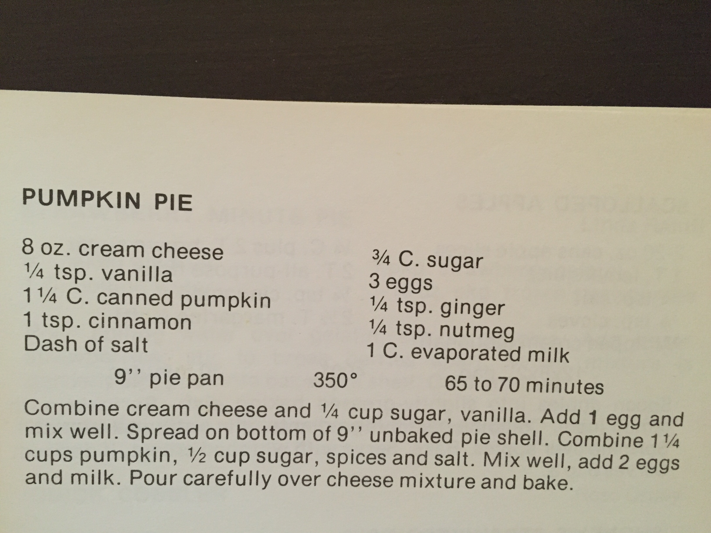

The Time That Everything Went Wrong
By: Lisha
12/5/2016
Okay, so I obviously don’t have a lot of experience with decorating. That’s the whole point of this website. But I do have quite a bit of experience with baking. Part of the fun with this whole thing is that no matter how atrocious the things we make look, we always know they will taste good. Of course, the trouble with that is that we can’t serve our atrocities to anyone who doesn’t know us well enough to look past their appearance so we usually end up eating most of them ourselves. This sounds really fun but when you’re stuck with 100 cake pops that vaguely look like demented snowman it becomes a problem.
Anyway, back to the point of this blog post. I’m going to tell you a story today about one of my past baking experiences. If I had any sense of pride, I would tell you a story about one of the times that my confections turned out perfectly (yes this has happened) …but I think it would be more entertaining if I told you about some of my baking fails. In honor of the pumpkin-obsessed season, I’m going to focus on a year when I made pumpkin pie and everything went wrong. Literally everything. I only have one picture of this disaster because I was too busy at the time weeping for what could have been, but hopefully my descriptions will suffice.
So first I guess I should talk about my history with pumpkin pie. I LOVE IT. Seriously, it’s my favorite pie. One year I asked for pumpkin pie to be my birthday cake because I love it that much. Maybe it’s because growing up I couldn’t really have it. Apparently when I was like three my mom tried to make pumpkin pie and something happened with whole nutmeg and sweetened condensed milk that scarred her forever. I never got to have it unless we went to a family member’s house for the holidays or the freezer section of the grocery store.
I started baking pretty early on when I was around 10 or 11. When I was 13, I got the idea in my head that I had to make a homemade pumpkin pie for Thanksgiving. I planned everything out meticulously. I watched Food Network 24/7 and spent hours poring over recipes. I was obsessed. So naturally, when the time came to make it everything went wrong.
I decided to use a recipe from an old church cookbook that my family has been using for all of time. It’s orange and tattered and all of the recipes in it are absolutely perfect. I can’t link you to the cookbook because it is over 30 years old, but here’s the recipe I used for my pie. It’s the recipe I still use today and I can attest that it is the best.
. .
.
So the pie isn’t just a basic pumpkin pie; it has a cream cheese/cheesecake layer on the bottom as well. Here is where I made my first mistake. As I’m sure all of you know, aluminum and metal does not belong in the microwave. Apparently there’s something with the electromagnetic waves that makes them not get along. When you put metal in the microwave it sparks/catches on fire/creates miniature explosions. 13 year-old me did not know about the tension between microwaves and metal. Can you see where I’m going with this?
As any good viewer of the Food Network, I knew that cream cheese has to be softened if you want to mix it up with something else. I had forgotten to leave mine out on the counter, so I decided to heat it up in the microwave for a few seconds…. with the aluminum wrapper still on. Any guesses on what happened next? Yeah, the microwave started crackling and caught on fire. My cream cheese was actually fine but I felt terrible. My mother, who came to the rescue and saved our microwave from an eminent death, actually encouraged me to keep making my pie for whatever reason. And so I carried on.
What happened next was a series of struggles. The cream cheese wasn’t soft enough to be beaten so I had to leave the filling with thick lumps that refused to cooperate. Then, I spent about thirty minutes wrestling with the can opener to get the pureed pumpkin open (I refused to let anyone help me).
The next big ordeal happened when I went to pour the pumpkin filling into the crust. One thing I will say about this recipe is that it doesn’t state outright that you need a deep dish pie crust but you really really do. Even with the deep dish crust there isn’t enough room for all of the filling; I always end up leaving out around half a cup or so. I did not have a deep dish pie crust. And yet, I still poured all of the filling into the crust. All of it. I didn’t just pour it in blindly; I recognized that it was too much but I trusted the recipe religiously and the recipe mentioned nothing about reserving the filling.
When I was done, the filling just barely fit in the crust. And when I say just barely, I mean that the slightest of gentle breezes could have caused the filling to slosh out over the edge. So, of course, when I made to move the pie from the counter to the oven about half of it landed on the floor. I looked on in unbridled horror but I had already committed; I had no choice but to keep taking the pie to the oven.
Miraculously, I made it to the oven but my pie was in pretty rough shape. The pretty crimped edges of the crust were coated in the pumpkin filling, and all of the jostling had caused some of the cream cheese layer to float up to the top. “It’s fine,” my mother assured me, “Now it has character.”
My pie had bountiful character. Endless character. Enough character to fill a whole theater of people and entertain them for hours. I made a place for myself in front of the oven and turned the light on. I alternated between watching the pie and glaring at the clock with a laser-like focus as the time ticked away. It was quite the dramatic experience; I watched in terror as the filling puffed up and threated to overflow but eventually settled back down.
After precisely 70 minutes had passed, I leapt up and donned my oven mitts. This is where things went terribly terribly wrong. I grabbed the pie out of the oven carefully, cradling it with all of the care in the world as I lifted it slowly off of its rack. And then? I dropped it. Yes, you read that correctly. I dropped the pie. I. dropped. the. pie. Here was the aftermath.

Looking back on it this is hysterically funny to me but at the time I was genuinely devastated. I had such high hopes for that pie and as I dropped it I watched them all break and splatter on the floor. But you know what? I made the pie again the next Thanksgiving. And the Thanksgiving after that. And ever since then, it has always turned out well. Here’s a picture of the one I made this past year.

I guess if there is a moral to my story it is that sometimes you have to practice things to get good at them. It’s okay if you don’t do things perfectly the first time around. This is true in baking, decorating, and life in general. Amanda and I have no idea what we’re doing right now when it comes to decorating. But maybe some day we will. And if not, at least we’ve had fun doing it.